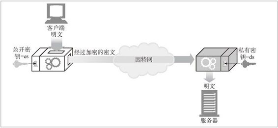
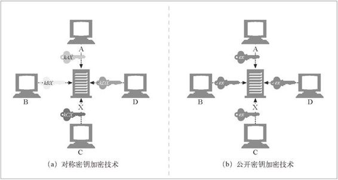

14.4 公开密钥加密技术
公开密钥加密技术没有为每对主机使用单独的加密 / 解密密钥，而是使用了两个非对称密钥：一个用来对主机报文编码，另一个用来对主机报文解码。编码密钥是众所周知的（这也是公开密钥加密这个名字的由来），但只有主机才知道私有的解密密钥（参见图 14-8）。这样，每个人都能找到某个特定主机的公开密钥，密钥的建立变得更加简单。但解码密钥是保密的，因此只有接收端才能对发送给它的报文进行解码。

图 14-8 公开密钥加密技术是非对称的，为编码和解码使用了不同的密钥
节点 X 可以将其加密密钥 ex 公之于众。1 现在，任何想向节点 X 发送报文的人都可以使用相同的公开密钥了。因为每台主机都分配了一个所有人均可使用的编码密钥，所以公开密钥加密技术避免了对称密钥加密技术中成对密钥数目的 N2 扩展问题（参见图 14-9）。
1 我们稍后会看到，大部分公开密钥查找工作实际上都是通过数字证书来实现的，但如何找到公开密钥现在并不重要——只要知道可以在某个地方公开获取就行了。

图 14-9 公开密钥加密技术为每台主机分配了一个公开编码密钥
尽管每个人都可以用同一个密钥对发给 X 的报文进行编码，但除了 X，其他人都无法对报文进行解码，因为只有 X 才有解码的私有密钥 dx。将密钥分隔开来可以让所有人都能够对报文进行编码，但只有其所有者才能对报文进行解码。这样，各节点向服务器安全地发送报文就更加容易了，因为它们只要查找到服务器的公开密钥就行了。
通过公开密钥加密技术，全球所有的计算机用户就都可以使用安全协议了。制定标准化的公开密钥技术包是非常重要的，因此，大规模的公开密钥架构（Public-Key Infrastructure，PKI）标准创建工作已经开展十多年了。
14.4.1 RSA
所有公开密钥非对称加密系统所面临的共同挑战是，要确保即便有人拥有了下面所有的线索，也无法计算出保密的私有密钥：
公开密钥（是公有的，所有人都可以获得）；
一小片拦截下来的密文（可通过对网络的嗅探获取）；
一条报文及与之相关的密文（对任意一段文本运行加密器就可以得到）。
RSA 算法就是一个满足了所有这些条件的流行的公开密钥加密系统，它是在 MIT 发明的，后来由 RSA 数据安全公司将其商业化。即使有了公共密钥、任意一段明文、用公共密钥对明文编码之后得到的相关密文、RSA 算法自身，甚至 RSA 实现的源代码，破解代码找到相应的私有密钥的难度仍相当于对一个极大的数进行质因数分解的困难程度，这种计算被认为是所有计算机科学中最难的问题之一。因此，如果你发现了一种能够快速地将一个极大的数字分解为质因数的方法，就不仅能够入侵瑞士银行的账户系统，而且还可以获得图灵奖了。
RSA 加密技术的细节中包括很多繁琐的数学问题，我们的介绍不会那么深入。你不需要拥有数论方面的博士学位，有大量的库可以用来执行 RSA 算法。
14.4.2 混合加密系统和会话密钥
任何人只要知道了其公开密钥，就可以向一台公共服务器发送安全报文，所以非对称的公开密钥加密系统是很好用的。两个节点无须为了进行安全的通信而先交换私有密钥。
但公开密钥加密算法的计算可能会很慢。实际上它混合使用了对称和非对称策略。比如，比较常见的做法是在两节点间通过便捷的公开密钥加密技术建立起安全通信，然后再用那条安全的通道产生并发送临时的随机对称密钥，通过更快的对称加密技术对其余的数据进行加密。